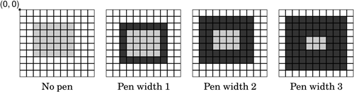
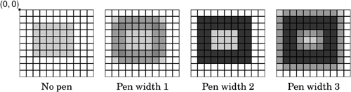
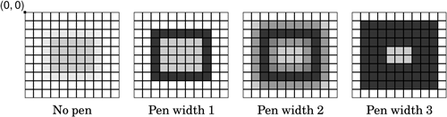
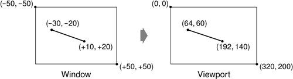
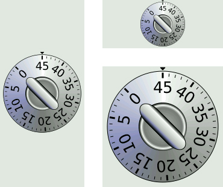

With QPainter's default coordinate system, the point (0, 0) is located at the top-left corner of the paint device, x-coordinates increase rightward, and y-coordinates increase downward. Each pixel occupies an area of size 1 x 1 in the default coordinate system.
Conceptually, the center of a pixel lies on "half-pixel" coordinates. For example, the top-left pixel of a widget covers the area between points (0, 0) and (1, 1), and its center is located at (0.5, 0.5). If we tell QPainter to draw a pixel at, say, (100, 100), it will approximate the result by shifting the coordinate by +0.5 in both directions, resulting in the pixel centered at (100.5, 100.5) being drawn.
This distinction may seem rather academic at first, but it has important consequences in practice. First, the shifting by +0.5 occurs only if antialiasing is disabled (the default); if antialiasing is enabled and we try to draw a pixel at (100, 100) in black, QPainter will actually color the four pixels (99.5, 99.5), (99.5, 100.5), (100.5, 99.5), and (100.5, 100.5) light gray, to give the impression of a pixel lying exactly at the meeting point of the four pixels. If this effect is undesirable, we can avoid it by specifying half-pixel coordinates or by translating the QPainter by (+0.5, +0.5).
When drawing shapes such as lines, rectangles, and ellipses, similar rules apply. Figure 8.7 shows how the result of a drawRect(2, 2, 6, 5) call varies according to the pen's width, when antialiasing is off. In particular, it is important to notice that a 6 x 5 rectangle drawn with a pen width of 1 effectively covers an area of size 7 x 6. This is different from older toolkits, including earlier versions of Qt, but it is essential for making truly scalable, resolution-independent vector graphics possible. Figure 8.8 shows the result of drawRect(2, 2, 6, 5) when antialiasing is on, and Figure 8.9 shows what happens when we specify half-pixel coordinates.



Now that we understand the default coordinate system, we can take a closer look at how it can be changed using QPainter's viewport, window, and world transform. (In this context, the term "window" does not refer to a window in the sense of a top-level widget, and the "viewport" has nothing to do with QScrollArea's viewport.)
The viewport and the window are tightly bound. The viewport is an arbitrary rectangle specified in physical coordinates. The window specifies the same rectangle, but in logical coordinates. When we do the painting, we specify points in logical coordinates, and those coordinates are converted into physical coordinates in a linear algebraic manner, based on the current window–viewport settings.
By default, the viewport and the window are set to the device's rectangle. For example, if the device is a 320 x 200 widget, both the viewport and the window are the same 320 x 200 rectangle with its top-left corner at position (0, 0). In this case, the logical and physical coordinate systems are the same.
The window–viewport mechanism is useful to make the drawing code independent of the size or resolution of the paint device. For example, if we want the logical coordinates to extend from (-50, -50) to (+50, +50), with (0, 0) in the middle, we can set the window as follows:
painter.setWindow(-50, -50, 100, 100);
The (-50, -50) pair specifies the origin, and the (100, 100) pair specifies the width and height. This means that the logical coordinates (-50, -50) now correspond to the physical coordinates (0, 0), and the logical coordinates (+50, +50) correspond to the physical coordinates (320, 200). This is illustrated in Figure 8.10. In this example, we didn't change the viewport.

Now comes the world transform. The world transform is a transformation matrix that is applied in addition to the window–viewport conversion. It allows us to translate, scale, rotate, or shear the items we are drawing. For example, if we wanted to draw text at a 45° angle, we would use this code:
QTransform transform;
transform.rotate(+45.0);
painter.setWorldTransform(transform);
painter.drawText(pos, tr("Sales"));The logical coordinates we pass to drawText() are converted by the world transform, then mapped to physical coordinates using the window–viewport settings.
If we specify multiple transformations, they are applied in the order in which they are given. For example, if we want to use the point (50, 50) as the rotation's pivot point, we can do so by translating the window by (+50, +50), performing the rotation, and then translating the window back to its original position:
QTransform transform;
transform.translate(+50.0, +50.0);
transform.rotate(+45.0);
transform.translate(-50.0, -50.0);
painter.setWorldTransform(transform);
painter.drawText(pos, tr("Sales"));A simpler way to specify transformations is to use QPainter's translate(), scale(), rotate(), and shear() convenience functions:
painter.translate(-50.0, -50.0);
painter.rotate(+45.0);
painter.translate(+50.0, +50.0);
painter.drawText(pos, tr("Sales"));If we want to use the same transformations repeatedly, it is more efficient to store them in a QTransform object and set the world transform on the painter whenever the transformations are needed.
To illustrate painter transformations, we will review the code of the OvenTimer widget shown in Figures 8.11 and 8.12. The OvenTimer widget is modeled after the kitchen timers that were used before it was common to have ovens with clocks built-in. The user can click a notch to set the duration. The wheel automatically turns counterclockwise until 0 is reached, at which point OvenTimer emits the timeout() signal.

class OvenTimer : public QWidget
{
Q_OBJECT
public:
OvenTimer(QWidget *parent = 0);
void setDuration(int secs);
int duration() const;
void draw(QPainter *painter);
signals:
void timeout();
protected:
void paintEvent(QPaintEvent *event);
void mousePressEvent(QMouseEvent *event);
private:
QDateTime finishTime;
QTimer *updateTimer;
QTimer *finishTimer;
};The OvenTimer class is derived from QWidget and reimplements two virtual functions: paintEvent() and mousePressEvent().
const double DegreesPerMinute = 7.0; const double DegreesPerSecond = DegreesPerMinute / 60; const int MaxMinutes = 45; const int MaxSeconds = MaxMinutes * 60; const int UpdateInterval = 5;
In oventimer.cpp, we start by defining a few constants that control the oven timer's look and feel.
OvenTimer::OvenTimer(QWidget *parent)
: QWidget(parent)
{
finishTime = QDateTime::currentDateTime();
updateTimer = new QTimer(this);
connect(updateTimer, SIGNAL(timeout()), this, SLOT(update()));
finishTimer = new QTimer(this);
finishTimer->setSingleShot(true);
connect(finishTimer, SIGNAL(timeout()), this, SIGNAL(timeout()));
connect(finishTimer, SIGNAL(timeout()), updateTimer, SLOT(stop()));
QFont font;
font.setPointSize(8);
setFont(font);
}In the constructor, we create two QTimer objects: updateTimer is used to refresh the appearance of the widget every five seconds, and finishTimer emits the widget's timeout() signal when the oven timer reaches 0. The finishTimer needs to time out only once, so we call setSingleShot(true); by default, timers fire repeatedly until they are stopped or destroyed. The last connect() call is an optimization to stop updating the widget when the timer is inactive.
At the end of the constructor, we set the point size of the font used for drawing the widget to 9 points. This is done to ensure that the numbers displayed on the timers have approximately the same size everywhere.
void OvenTimer::setDuration(int secs)
{
secs = qBound(0, secs, MaxSeconds);
finishTime = QDateTime::currentDateTime().addSecs(secs);
if (secs > 0) {
updateTimer->start(UpdateInterval * 1000);
finishTimer->start(secs * 1000);
} else {
updateTimer->stop();
finishTimer->stop();
}
update();
}The setDuration() function sets the duration of the oven timer to the given number of seconds. Using Qt's global qBound() function means that we can avoid writing code such as this:
if (secs < 0) {
secs = 0;
} else if (secs > MaxSeconds) {
secs = MaxSeconds;
}We compute the finish time by adding the duration to the current time (obtained from QDateTime::currentDateTime()) and store it in the finishTime private variable. At the end, we call update() to redraw the widget with the new duration.
The finishTime variable is of type QDateTime. Since the variable holds both a date and a time, we avoid a wrap-around bug when the current time is before midnight and the finish time is after midnight.
int OvenTimer::duration() const
{
int secs = QDateTime::currentDateTime().secsTo(finishTime);
if (secs < 0)
secs = 0;
return secs;
}The duration() function returns the number of seconds left before the timer is due to finish. If the timer is inactive, we return 0.
void OvenTimer::mousePressEvent(QMouseEvent *event)
{
QPointF point = event->pos() - rect().center();
double theta = std::atan2(-point.x(), -point.y()) * 180.0 / M_PI;
setDuration(duration() + int(theta / DegreesPerSecond));
update();
}If the user clicks the widget, we find the closest notch using a subtle but effective mathematical formula, and we use the result to set the new duration. Then we schedule a repaint. The notch that the user clicked will now be at the top and will move counterclockwise as time passes until 0 is reached.
void OvenTimer::paintEvent(QPaintEvent * /* event */)
{
QPainter painter(this);
painter.setRenderHint(QPainter::Antialiasing, true);
int side = qMin(width(), height());
painter.setViewport((width() - side) / 2, (height() - side) / 2,
side, side);
painter.setWindow(-50, -50, 100, 100);
draw(&painter);
}In paintEvent(), we set the viewport to be the largest square area that fits inside the widget, and we set the window to be the rectangle (-50, -50, 100, 100), that is, the 100 x 100 rectangle extending from (-50, -50) to (+50, +50). The qMin() template function returns the lowest of its two arguments. Then we call the draw() function to actually perform the drawing.
If we had not set the viewport to be a square, the oven timer would be an ellipse when the widget is resized to a non-square rectangle. To avoid such deformations, we must set the viewport and the window to rectangles with the same aspect ratio.
Now let's look at the drawing code:
void OvenTimer::draw(QPainter *painter)
{
static const int triangle[3][2] = {
{ -2, -49 }, { +2, -49 }, { 0, -47 }
};
QPen thickPen(palette().foreground(), 1.5);
QPen thinPen(palette().foreground(), 0.5);
QColor niceBlue(150, 150, 200);
painter->setPen(thinPen);
painter->setBrush(palette().foreground());
painter->drawPolygon(QPolygon(3, &triangle[0][0]));We start by drawing the tiny triangle that marks the 0 position at the top of the widget. The triangle is specified by three hard-coded coordinates, and we use drawPolygon() to render it.
What is so convenient about the window–viewport mechanism is that we can hard-code the coordinates we use in the draw commands and still get good resizing behavior.
QConicalGradient coneGradient(0, 0, -90.0);
coneGradient.setColorAt(0.0, Qt::darkGray);
coneGradient.setColorAt(0.2, niceBlue);
coneGradient.setColorAt(0.5, Qt::white);
coneGradient.setColorAt(1.0, Qt::darkGray);
painter->setBrush(coneGradient);
painter->drawEllipse(-46, -46, 92, 92);We draw the outer circle and fill it using a conical gradient. The gradient's center point is located at (0, 0), and the angle is -90°.
QRadialGradient haloGradient(0, 0, 20, 0, 0);
haloGradient.setColorAt(0.0, Qt::lightGray);
haloGradient.setColorAt(0.8, Qt::darkGray);
haloGradient.setColorAt(0.9, Qt::white);
haloGradient.setColorAt(1.0, Qt::black);
painter->setPen(Qt::NoPen);
painter->setBrush(haloGradient);
painter->drawEllipse(-20, -20, 40, 40);We fill the inner circle using a radial gradient. The center point and the focal point of the gradient are located at (0, 0). The radius of the gradient is 20.
QLinearGradient knobGradient(-7, -25, 7, -25);
knobGradient.setColorAt(0.0, Qt::black);
knobGradient.setColorAt(0.2, niceBlue);
knobGradient.setColorAt(0.3, Qt::lightGray);
knobGradient.setColorAt(0.8, Qt::white);
knobGradient.setColorAt(1.0, Qt::black);
painter->rotate(duration() * DegreesPerSecond);
painter->setBrush(knobGradient);
painter->setPen(thinPen);
painter->drawRoundRect(-7, -25, 14, 50, 99, 49);
for (int i = 0; i <= MaxMinutes; ++i) {
if (i % 5 == 0) {
painter->setPen(thickPen);
painter->drawLine(0, -41, 0, -44);
painter->drawText(-15, -41, 30, 30,
Qt::AlignHCenter | Qt::AlignTop,
QString::number(i));
} else {
painter->setPen(thinPen);
painter->drawLine(0, -42, 0, -44);
}
painter->rotate(-DegreesPerMinute);
}
}
We call rotate() to rotate the painter's coordinate system. In the old coordinate system, the 0-minute mark was on top; now, the 0-minute mark is moved to the place that is appropriate for the time left. We draw the rectangular knob handle after the rotation, since its orientation depends on the rotation angle.
In the for loop, we draw the tick marks along the outer circle's edge and the numbers for each multiple of five minutes. The text is drawn in an invisible rectangle underneath the tick mark. At the end of each iteration, we rotate the painter clockwise by 7°, which corresponds to one minute. The next time we draw a tick mark, it will be at a different position around the circle, even though the coordinates we pass to the drawLine() and drawText() calls are always the same.
The code in the for loop suffers from a minor flaw, which would quickly become apparent if we performed more iterations. Each time we call rotate(), we effectively multiply the current world transform with a rotation transform, producing a new world transform. The rounding errors associated with floating-point arithmetic gradually accumulate, resulting in an increasingly inaccurate world transform. Here's one way to rewrite the code to avoid this issue, using save() and restore() to save and reload the original transform for each iteration:
for (int i = 0; i <= MaxMinutes; ++i) {
painter->save();
painter->rotate(-i * DegreesPerMinute);
if (i % 5 == 0) {
painter->setPen(thickPen);
painter->drawLine(0, -41, 0, -44);
painter->drawText(-15, -41, 30, 30,
Qt::AlignHCenter | Qt::AlignTop,
QString::number(i));
} else {
painter->setPen(thinPen);
painter->drawLine(0, -42, 0, -44);
}
painter->restore();
}Another way of implementing an oven timer would have been to compute the (x, y) positions ourselves, using sin() and cos() to find the positions along the circle. But then we would still need to use a translation and a rotation to draw the text at an angle.